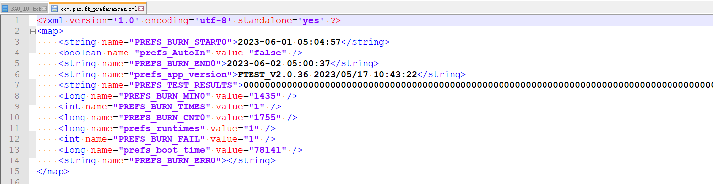

README
高通双mic配置. 基于qcm2290 打开双mic通道,tunning的话,高通要收钱买算法
修改
配置属性,确认属性如图,有两个ro要mk配置

UM.9.15/vendor/qcom/opensource/audio-hal/primary-hal/configs/bengal/bengal.mk
ro.vendor.audio.sdk.fluencetype=fluence\
ro.qc.sdk.audio.fluencetype=fluence\
音频通道修改
--- a/UM.9.15/vendor/qcom/opensource/audio-hal/primary-hal/configs/bengal/mixer_paths_scubaidp_AW1SPK.xml
+++ b/UM.9.15/vendor/qcom/opensource/audio-hal/primary-hal/configs/bengal/mixer_paths_scubaidp_AW1SPK.xml
@@ -2867,11 +2867,15 @@
<!-- Dual MIC devices -->
<path name="handset-dmic-endfire">
<ctl name="TX_CDC_DMA_TX_3 Channels" value="Two" />
+ <ctl name="TX DEC1 MUX" value="SWR_MIC" />
+ <ctl name="TX SMIC MUX1" value="SWR_MIC0" />
<ctl name="TX_AIF1_CAP Mixer DEC1" value="1" />
- <ctl name="TX DMIC MUX1" value="DMIC2" />
+ <ctl name="ADC1_MIXER Switch" value="1" />
+ <ctl name="TX DEC2 MUX" value="SWR_MIC" />
+ <ctl name="TX SMIC MUX2" value="SWR_MIC1" />
<ctl name="TX_AIF1_CAP Mixer DEC2" value="1" />
- <ctl name="TX DMIC MUX2" value="DMIC3" />
- <ctl name="TX_DEC2 Volume" value="84" />
+ <ctl name="ADC2_MIXER Switch" value="1" />
+ <ctl name="ADC2 MUX" value="INP3" />
</path>
<path name="speaker-dmic-endfire">
修改确认
你打开录音，抓acdb关键字,log显示如下,41代表走算法通道,4走默认通道
